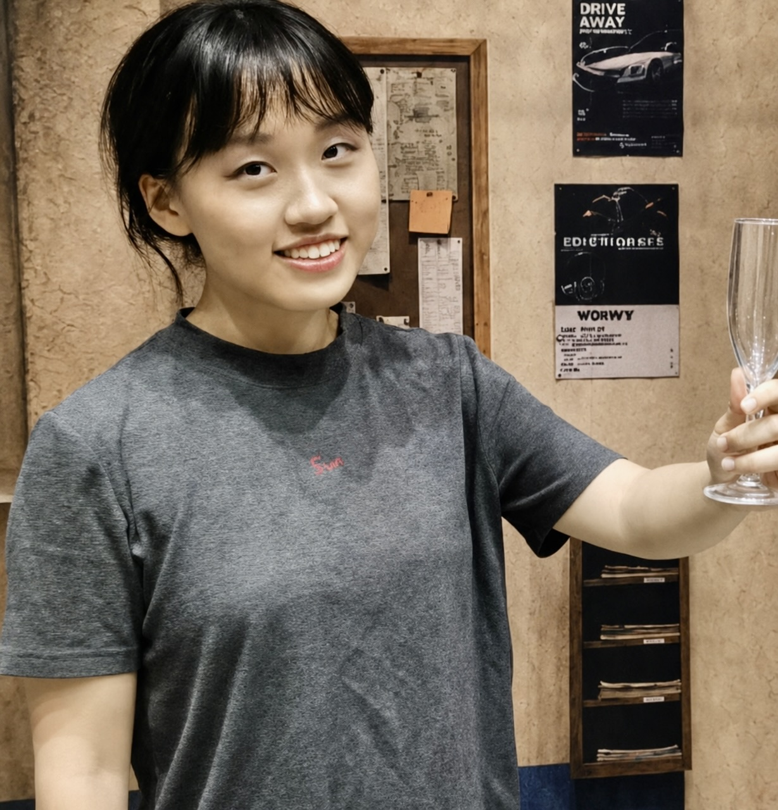
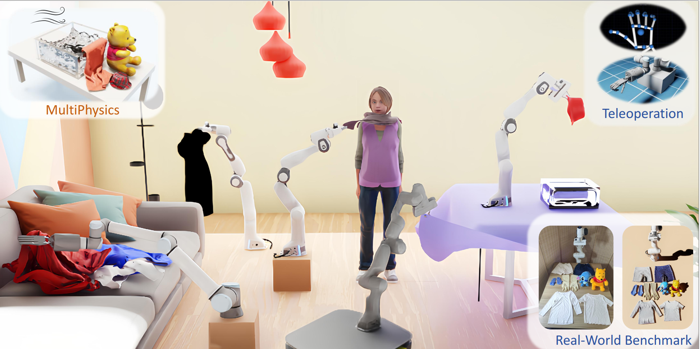

MoRE: Mixture-of-Experts for Multi-Physics Robotic World Models
CoRL 2026Spotlight
A 3D world model with a mixture of motion experts for multi-physics robotic manipulation.

I am a Ph.D. student at the Georgia Institute of Technology, advised by Prof. Danfei Xu. I received my B.S. degree in Computer Science from Peking University and previously conducted research at the University of Illinois Urbana-Champaign with Prof. Shenlong Wang.
My research interest lies in robotics and computer vision, with the goal of enabling robots to perform dexterous tasks with adaptability, generalizability and safety.
MoRE is accepted to CoRL 2026 as a Spotlight. See you in Austin! 🤠
Started my Ph.D. at Georgia Tech. 🐝
Graduated from Peking University. 🎓
A 3D world model with a mixture of motion experts for multi-physics robotic manipulation.

A realistic sim environment for bimanual dexterous garment manipulation, with a new benchmark, an efficient data collection pipeline, and a policy framework that uses category-level visual correspondences for few-shot garment manipulation.

Point-level affordance that models the complex space and multi-modal manipulation candidates of garment piles, aware of garment geometry, structure, and inter-object relations, with further adaptation.

A benchmark for garment manipulation in realistic 3D indoor scenes, covering diverse garment types, robots and manipulators including dexterous hands, and interactions with deformables, rigid bodies, fluids, and avatars.
Outside the lab, I love drawing 🎨 and musicals 🎭. At Peking University I was a member of the Musical Society, and was cast as Camila in our production of In the Heights (2025–2026).